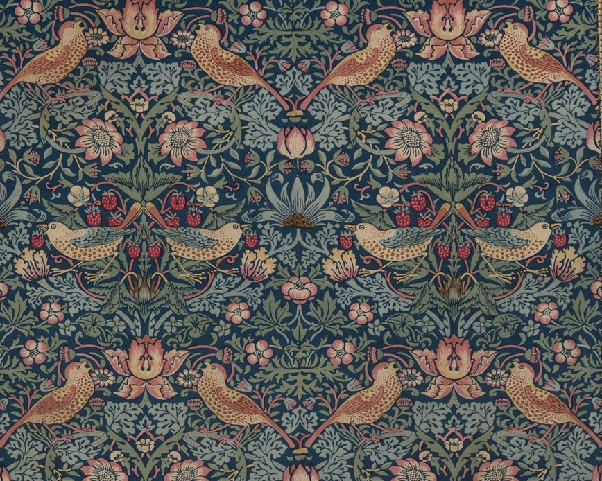

ראייה · תפיסה · תשומת לב
לשער היחידה←תכנית אמנות ויצירתיות לבתי ספר
מקורות השראה באמנות Sources of Inspiration in Art
תכנית אינטראקטיבית שמחברת התבוננות, אמנות, שיחה ויצירה, דרך מסע של יחידות ושיעורים.
איך רעיון הופך לדימוי, ודימוי ליצירה
המסע
שבע יחידות
שאלה אחת גדולה: מאין מגיעה יצירתיות?
בכל יחידה פוגשים מקור השראה אחר. מתבוננים, משוחחים ויוצרים עבודה אישית מתוך מה שעורר עניין.
השראה←
התבוננות←
רעיון←
יצירה

01
חוויה אישית
רגש · זיכרון · יומן
לשער היחידה←
02
מבט החוצה
דפוס · פרט · אור · מרחב · תנועה
לשער היחידה←
צליל · קצב · תנועה
לשער היחידה←
04
זיכרון וזהות
זיכרון · דיוקן · זהות
לשער היחידה←
05
תרבות וסמלים
סמל · מסורת · מורשת
לשער היחידה←
06
סגנון אישי
קול · בחירה · דרך
לשער היחידה←למה התכנית
- לומדים דרך שאלות.
כל שיעור נפתח בשאלה ובהתבוננות: בעולם, בחפץ או בחוויה של התלמידים, לפני שמגיעים ליצירה.
- מקורות אמנותיים מגוונים.
יצירות מתקופות, ממקומות ומחומרים שונים: ציור, וידאו, צילום, עיצוב ומיצב. הן מוצגות כמקור השראה, לא כדוגמה להעתקה.
- תרגול יצירתי מונחה.
תרגילים קצרים וברורים, צעד אחרי צעד, שמובילים לעבודה אישית. אין תשובה אחת נכונה.
- עצירה לרפלקציה.
השיעורים מסתיימים בהתבוננות בעבודה: מה עשיתי, מה גיליתי, מה אקח הלאה.
- בכל כיתה.
בעברית ובאנגלית, בדפדפן — במחשב, בטאבלט, בטלפון או על מסך בכיתה.
מה קורה בכל שיעור
שיעור בתכנית בנוי בדרך כלל כרצף קצר וברור של חמישה שלבים:
- 01מה אנחנו חוקרים?
שאלה פותחת והתבוננות ראשונה
- 02מקורות השראה
יצירות של אמנים, עם מידע קצר וקישור למוזיאון
- 03מסתכלים
שאלות התבוננות ושיחה
- 04יוצרים
תרגיל מונחה, ואחריו זמן עבודה עצמאי
- 05סיום
עצירה לרפלקציה על העבודה
שיעור לדוגמה
רוצים להכניס את התכנית לבית הספר?
לשאלות, להצעת מחיר או לתיאום הדגמה, כתבו לנו.
אודות
על התכנית
תכנית בת שבע יחידות לחקירת מקורות ההשראה באמנות. מתבוננים ביצירות, שואלים שאלות ומתנסים ביצירה מתוך חוויה אישית, מבט החוצה, מוזיקה, זיכרון ותרבות.